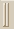

While working in ASAP, several document windows are available for
user tasks. You can easily move in and out of a window, and ASAP Workspace
window reflects the document window you have in focus.
- ASAP Workspace for viewing
lists of open document windows, files, and objects.
- Command Input for entering
scripting language and viewing the active local (or remote) machine, and
Command Output for displaying the results.
- Builder and Editor windows
for creating and refining your script files, using embedded assistants, and for
tolerancing analysis.
- Plot Viewer, Chart Viewer,
3D Viewer, and Display Viewer for displaying your work in progress.
- Quick Start toolbar for
easily accessing sources, glasses, models, example scripts, interactive
scripts, and lenses.
- BSDF Fit Utility for fitting
Harvey and polynomial models.
- Screen Editor window for
designing custom dialog boxes.
Right-click in the title bar of any ASAP document window to set the
current position and size as the default for future windows of this type.
Use the grab bars
 to
undock, place, or redock other graphical elements in the landscape.
Inside the Command Output window, right-click and uncheck
Docking View to undock and allow other windows to apear in front
of this window.
Customizing the Toolbar
You can add or remove buttons on the toolbar of the main window.
Right-click in an empty area of the main toolbar to open the dialog box,
Customize Toolbar.